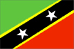
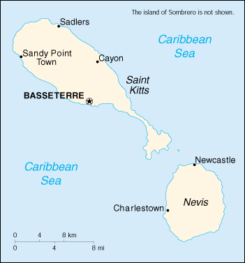

{kind=link}


| Saint Kitts and Nevis |  |
|
|  | |
| Introduction |
Background: First settled by the British in 1623, the islands along with Anguilla, became an associated state with full internal autonomy in 1967. Anguilla rebelled and was allowed to secede in 1971. St. Kitts and Nevis achieved independence in 1983. In 1998, a vote in Nevis on a referendum to separate from St. Kitts fell short of the two-thirds majority needed.
| Geography |
Location: Caribbean, islands in the Caribbean Sea, about one-third of the way from Puerto Rico to Trinidad and Tobago
Geographic coordinates: 17 20 N, 62 45 W
Map references: Central America and the Caribbean
Area:
total:
261 sq km (Saint Kitts 168 sq km; Nevis 93 sq km)
land:
261 sq km
water:
0 sq km
Area - comparative: 1.5 times the size of Washington, DC
Land boundaries: 0 km
Coastline: 135 km
Maritime claims:
continental shelf:
200 nm or to the edge of the continental margin
territorial sea:
12 nm
contiguous zone:
24 nm
exclusive economic zone:
200 nm
Climate: tropical tempered by constant sea breezes; little seasonal temperature variation; rainy season (May to November)
Terrain: volcanic with mountainous interiors
Elevation extremes:
lowest point:
Caribbean Sea 0 m
highest point:
Mount Liamuiga 1,156 m
Natural resources: arable land
Land use:
arable land:
22%
permanent crops:
17%
permanent pastures:
3%
forests and woodland:
17%
other:
41% (1993 est.)
Irrigated land: NA sq km
Natural hazards: hurricanes (July to October)
Environment - current issues: NA
Environment - international agreements:
party to:
Biodiversity, Climate Change, Desertification, Endangered Species, Hazardous Wastes, Law of the Sea, Ozone Layer Protection, Ship Pollution, Whaling
signed, but not ratified:
none of the selected agreements
| People |
Population: 38,819 (July 2000 est.)
Age structure:
0-14 years:
30% (male 5,999; female 5,746)
15-64 years:
61% (male 11,770; female 11,838)
65 years and over:
9% (male 1,431; female 2,035) (2000 est.)
Population growth rate: -0.22% (2000 est.)
Birth rate: 19.06 births/1,000 population (2000 est.)
Death rate: 9.38 deaths/1,000 population (2000 est.)
Net migration rate: -11.85 migrant(s)/1,000 population (2000 est.)
Sex ratio:
at birth:
1.06 male(s)/female
under 15 years:
1.04 male(s)/female
15-64 years:
0.99 male(s)/female
65 years and over:
0.7 male(s)/female
total population:
0.98 male(s)/female (2000 est.)
Infant mortality rate: 16.72 deaths/1,000 live births (2000 est.)
Life expectancy at birth:
total population:
70.73 years
male:
67.95 years
female:
73.68 years (2000 est.)
Total fertility rate: 2.43 children born/woman (2000 est.)
Nationality:
noun:
Kittitian(s), Nevisian(s)
adjective:
Kittitian, Nevisian
Ethnic groups: predominantly black some British, Portuguese, and Lebanese
Religions: Anglican, other Protestant, Roman Catholic
Languages: English
Literacy:
definition:
age 15 and over has ever attended school
total population:
97%
male:
97%
female:
98% (1980 est.)
| Government |
Country name:
conventional long form:
Federation of Saint Kitts and Nevis
conventional short form:
Saint Kitts and Nevis
former:
Federation of Saint Christopher and Nevis
Data code: SC
Government type: constitutional monarchy with Westminster-style parliament
Capital: Basseterre
Administrative divisions: 14 parishes; Christ Church Nichola Town, Saint Anne Sandy Point, Saint George Basseterre, Saint George Gingerland, Saint James Windward, Saint John Capisterre, Saint John Figtree, Saint Mary Cayon, Saint Paul Capisterre, Saint Paul Charlestown, Saint Peter Basseterre, Saint Thomas Lowland, Saint Thomas Middle Island, Trinity Palmetto Point
Independence: 19 September 1983 (from UK)
National holiday: Independence Day, 19 September (1983)
Constitution: 19 September 1983
Legal system: based on English common law
Suffrage: 18 years of age; universal
Executive branch:
chief of state:
Queen ELIZABETH II (since 6 February 1952), represented by Governor General Dr. Cuthbert Montraville SEBASTIAN (since 1 January 1996)
head of government:
Prime Minister Dr. Denzil DOUGLAS (since 6 July 1995) and Deputy Prime Minister Sam CONDOR (since 6 July 1995)
cabinet:
Cabinet appointed by the governor general in consultation with the prime minister
elections:
none; the monarch is hereditary; the governor general is appointed by the monarch; following legislative elections, the leader of the majority party or leader of a majority coalition is usually appointed prime minister by the governor general; deputy prime minister appointed by the governor general
Legislative branch:
unicameral National Assembly (14 seats, 3 appointed and 11 popularly elected from single-member constituencies; members serve five-year terms)
elections:
last held 3 July 1995 (next to be held by July 2000)
election results:
percent of vote by party - SKLNP 58%, PAM 41%; seats by party - SKNLP 7, PAM 1, NRP 1, CCM 2
Judicial branch: Eastern Caribbean Supreme Court (based on Saint Lucia), one judge of the Supreme Court resides in Saint Kitts
Political parties and leaders: Concerned Citizens Movement or CCM [Vance AMORY]; Nevis Reformation Party or NRP [Joseph PARRY]; People's Action Movement or PAM [Dr. Kennedy SIMMONDS]; Saint Kitts and Nevis Labor Party or SKNLP [Dr. Denzil DOUGLAS]
International organization participation: ACP, C, Caricom, CDB, ECLAC, FAO, G-77, IBRD, ICFTU, ICRM, IDA, IFAD, IFC, IFRCS, ILO, IMF, Interpol, IOC, OAS, OECS, OPANAL, OPCW, UN, UNCTAD, UNESCO, UNIDO, UPU, WCL, WHO, WIPO, WTrO
Diplomatic representation in the US:
chief of mission:
Ambassador Dr. Osbert W. LIBURD
chancery:
3216 New Mexico Avenue NW, Washington, DC 20016
telephone:
[1] (202) 686-2636
FAX:
[1] (202) 686-5740
Diplomatic representation from the US: the US does not have an embassy in Saint Kitts and Nevis; the US Ambassador in Barbados is accredited to Saint Kitts and Nevis
Flag description: divided diagonally from the lower hoist side by a broad black band bearing two white, five-pointed stars; the black band is edged in yellow; the upper triangle is green, the lower triangle is red
| Economy |
Economy - overview: The economy has traditionally depended on the growing and processing of sugarcane; decreasing world prices have hurt the industry in recent years. Tourism, export-oriented manufacturing, and offshore banking activity have assumed larger roles. Most food is imported. The government has undertaken a program designed to revitalize the faltering sugar sector. It is also working to improve revenue collection in order to better fund social programs. In 1997 some leaders in Nevis were urging separation from Saint Kitts on the basis that Nevis was paying far more in taxes than it was receiving in government services, but the vote on cessation failed in August 1998. In late September 1998, Hurricane Georges caused approximately $445 million in damages and limited GDP growth for the year.
GDP: purchasing power parity - $244 million (1998 est.)
GDP - real growth rate: 1.6% (1998 est.)
GDP - per capita: purchasing power parity - $6,000 (1998 est.)
GDP - composition by sector:
agriculture:
5.5%
industry:
22.5%
services:
72% (1996)
Population below poverty line: NA%
Household income or consumption by percentage share:
lowest 10%:
NA%
highest 10%:
NA%
Inflation rate (consumer prices): 1% (1998 est.)
Labor force: 18,172 (June 1995)
Labor force - by occupation: NA
Unemployment rate: 4.5% (1997)
Budget:
revenues:
$64.1 million
expenditures:
$73.3 million, including capital expenditures of $10.4 million (1997 est.)
Industries: sugar processing, tourism, cotton, salt, copra, clothing, footwear, beverages
Industrial production growth rate: NA%
Electricity - production: 85 million kWh (1998)
Electricity - production by source:
fossil fuel:
100%
hydro:
0%
nuclear:
0%
other:
0% (1998)
Electricity - consumption: 79 million kWh (1998)
Electricity - exports: 0 kWh (1998)
Electricity - imports: 0 kWh (1998)
Agriculture - products: sugarcane, rice, yams, vegetables, bananas; fish
Exports: $42 million (1998)
Exports - commodities: machinery, food, electronics, beverages, tobacco
Exports - partners: US 68.5%, UK 22.3%, Caricom countries 5.5% (1995 est.)
Imports: $160 million (1998)
Imports - commodities: machinery, manufactures, food, fuels
Imports - partners: US 42.4%, Caricom countries 17.2%, UK 11.3% (1995 est.)
Debt - external: $62 million (1997)
Economic aid - recipient: $5.5 million (1995)
Currency: 1 East Caribbean dollar (EC$) = 100 cents
Exchange rates: East Caribbean dollars (EC$) per US$1 - 2.7000 (fixed rate since 1976)
Fiscal year: calendar year
| Communications |
Telephones - main lines in use: 14,000 (1995)
Telephones - mobile cellular: 0 (1995)
Telephone system:
good interisland VHF/UHF/SHF radiotelephone connections and international link via Antigua and Barbuda and Saint Martin (Guadeloupe and Netherlands Antilles)
domestic:
interisland links are handled by VHF/UHF/SHF radiotelephone
international:
international calls are carried by radiotelephone to Antigua and Barbuda and from there switched to submarine cable or to Intelsat, or carried to Saint Martin (Guadeloupe and Netherlands Antilles) by radiotelephone and switched to Intelsat
Radio broadcast stations: AM 3, FM 1, shortwave 0 (1998)
Radios: 28,000 (1997)
Television broadcast stations: 1 (plus three repeaters) (1997)
Televisions: 10,000 (1997)
Internet Service Providers (ISPs): NA
| Transportation |
Railways:
total:
58 km
narrow gauge:
58 km 0.762-m gauge on Saint Kitts to serve sugarcane plantations (1995)
Highways:
total:
320 km
paved:
136 km
unpaved:
184 km (1996 est.)
Ports and harbors: Basseterre, Charlestown
Merchant marine: none (1999 est.)
Airports: 2 (1999 est.)
Airports - with paved runways:
total:
2
1,524 to 2,437 m:
1
914 to 1,523 m:
1 (1999 est.)
| Military |
Military branches: Royal Saint Kitts and Nevis Police Force, Coast Guard, Royal Saint Kitts and Nevis Defense Force
Military expenditures - dollar figure: $NA
Military expenditures - percent of GDP: NA%
| Transnational Issues |
Disputes - international: none
Illicit drugs: transshipment point for South American drugs destined for the US and Europe